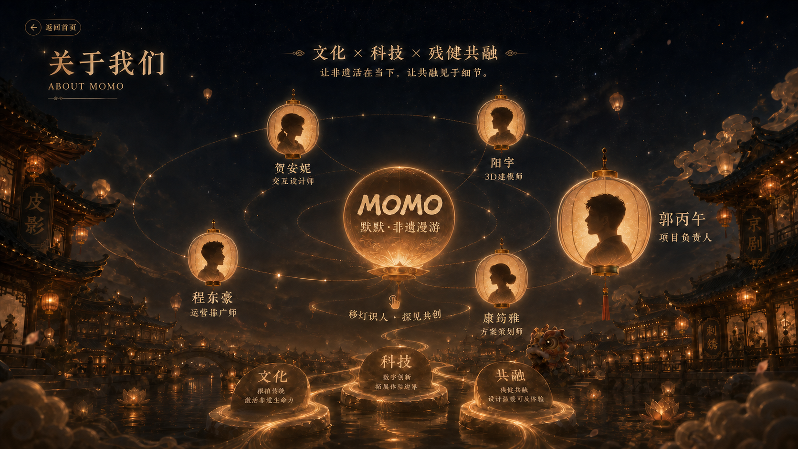
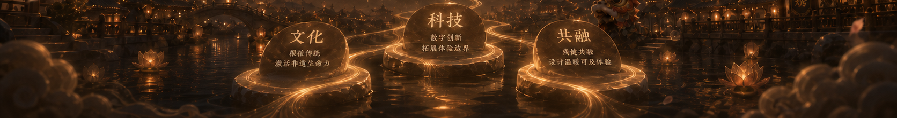
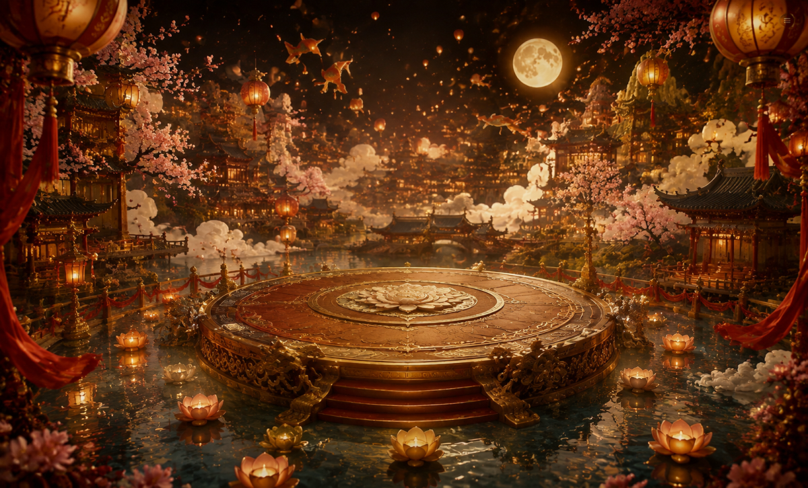
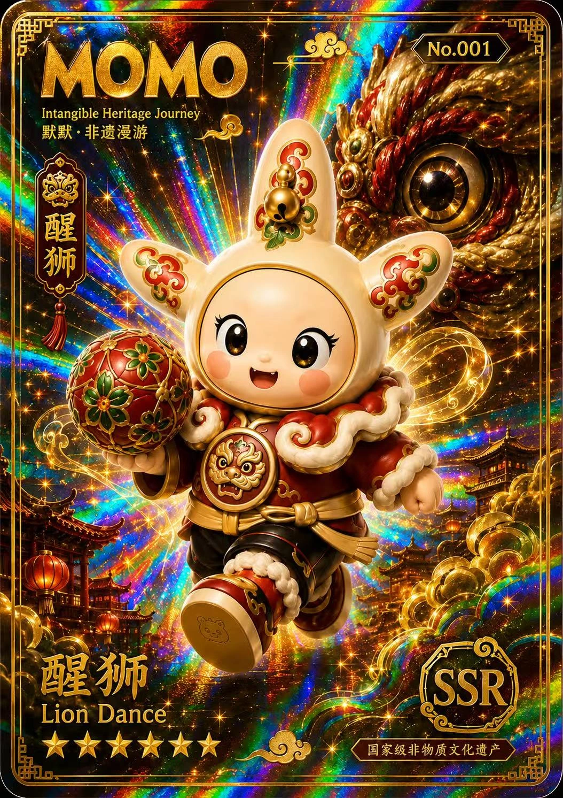

一盏灯，照见
九种守艺人生
默默来自天津理工大学聋人工学院。它循着小镇灯火，与九位非遗伙伴相遇，把传统技艺记录成可以阅读、触摸和收藏的盲盒故事。
- 入镇沿灯火进入非遗小镇，认识默默与九艺世界。
- 遇艺通过卡牌、文字与三维模型，安静地观察每一种技艺。
- 共融让听障创作者成为文化内容的设计者、讲述者与共创者。
移动灵珠，照见小镇深处
默默来自天津理工大学聋人工学院。它循着小镇灯火，与九位非遗伙伴相遇，把传统技艺记录成可以阅读、触摸和收藏的盲盒故事。



选择一盏灯，阅读它的技艺线索。

卡牌待解锁锣鼓唤醒狮魂，以腾跃、采青与礼俗寄托驱邪纳福的愿望。
卡牌与三维模型已收录左右拖动、滚动鼠标，或张开手掌左右移动卡牌环。

模型占位 · MODEL PREVIEW
九盏灵灯，藏着九段非遗故事
灵影呈现中
鼓点一响，百厄皆退。愿你心有热望，步步生风。
典藏 · HERITAGE